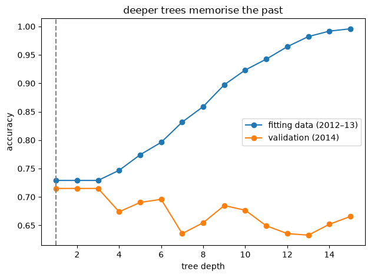

Practice tasks covered
- Practice 1 – implement CART to categorise data (rain tomorrow)
- Practice 2 – implement ensemble models (bagging, random forest, boosting, voting, stacking)
- A decision tree is written one split at a time from scratch (Gini impurity), then compared with scikit-learn.
- Bagging is written from scratch: 100 trees, each trained on a random re-sample of the days, then a vote.


| Model | Accuracy on 2015 | Log-loss |
|---|---|---|
| Logistic regression | 72.8% | 0.559 |
| Voting | 72.5% | 0.541 |
| Random forest | 71.7% | 0.547 |
| AdaBoost / gradient boosting / stacking | 70.9% | 0.55–0.57 |
| Bagging | 70.6% | 0.550 |
| Single deep tree | 68.7% | 2.816 |
Ensembles fix a deep tree (log-loss 2.8 down to about 0.55, because a lone deep tree is wildly over-confident), but none clearly beats logistic regression. With 364 test days, one accuracy figure is uncertain by about ±2.4 points.
Run the code
A single tree, three ensembles and a logistic regression, compared on the same split. This is real Python running in your browser. Edit it and press Run. The first run takes a little while to load Python.
week_5.pyPython · runs in your browser